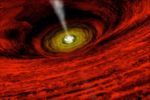

Destructor 2.0
 De: La Frikipedia, la enciclopedia extremadamente seria.
De: La Frikipedia, la enciclopedia extremadamente seria.
| De la serie animales y otros bichejos:
|
|
|
| Nombre común:
|
El Destructor 2.0
|
| Nombre científico:
|
Ostiaputis keacojonensis
|
| Especie:
|
no pertenece a ninguna: es único.
|
| Subespecie:
|
¡que no tiene, coño!
|
| Alimentación:
|
hmmmm... lo que seaa...
|
| Apariencia:
|
es algo así como grande, y con cosas que le salen de esas otras cosas... como para verlo, vamos.
|
| Hábitat natural:
|
él es el hábitat
|
| Localización:
|
cuando lo veas lo sabrás. es fácil, miras p'arriba, y si se te están comiendo el mundo, es que esta ahí
|
| Número aproximado de ejemplares:
|
el 937156422892 es el de la seguridad social. él es único.
|
| Fecha de extinción:
|
más quisieras
|
| Pokemonización:
|
¿una dimensión paralela?
|
El Destructor. Es bonito, hay que reconocerlo.
«Soy un Istari, el Mago Blanco. He sido enviado por los Valar para protegeros. Pero, si te digo la verdad, ante este enemigo me cago de miedo.»
~ Gandalf Sobre el Destructor.
«¡¡...pero si es un hijo de...!!»
~ los griegos milésimas de segundo antes de ser destruidos por el mismo.
El Destructor (modelo 2.0 2007) es un fenómeno cósmico capaz de absorber planetas, estrellas, galaxias... y hasta Bilbao.
Sus oscuros, oscuros orígenes
Se dice que fue creado en los albores del tiempo, antes incluso que el Badabing badabang. Su padre era Galactus, (alguien a quien sólo los fervientes seguidores de Marvel comics conocerán). Era tan oscuro, que los bujeros negros le llamaban "el Negro".
Qué decir de su aspecto, una abominable masa de... de... algo. Sí, suena fatal, pero no es facil de describir. En él podría aplicarse la frase "soy lo que como", puesto que se parecía a un enorme revoltijo de escombros estelares, gases y huevos revueltos.
Para su creación se unieron las fuerzas más malignas de todo el universo: El mismo Sauron le dio un anillo, el mismísimo Lord Oscuro le enseñó a usar la fuerza, Chiquito, el sacrificio de tres millones de Wombatosaurios y un ornitorrinco y consumiendo la vida de siete lichs. Por eso, Destructor recuerda perfectamente el día de su nacimiento, conoce el sentido de la vida y cuenta con la versión avanzada del Windows Vista (sin colgarse).
 La creación de el Enterrad... digoo, del Destructor.
Poderes
- Tiene el tamaño de trescientos soles bisiestos y cachondos en la edad del pavo.
- Tiene una densidad 30000000 veces superior a la de la materia fecal de Mordisquitos (el bicho de Futurama).
- Se desplaza a una velocidad de 456743992987748390200000000000000000000000 años luz por segundo (para que os hagáis una idea, el triple de la velocidad alcanzada por superman cuando le entran ganas de ir al excusado).
- Cada huevo le pesa 98340000000000000 millones de toneladas (y eso que tiene siete).
- Su temperatura corporal es equiparable a la de un adolescente febril ausentista al ver a 34500 mujeres como Elsa Pataki nadando en la playa en bolingas y con un volcán eructando lava a su alrededor.
- Tiene aparatos en los dientes de titanio puro, capaces de romper una ciudad de adamantium.
y una polla de 50000000 kilómetros de largo y 6534 de ancho.
Méritos
Gandalf acojonado ante la impresionante lista de méritos de el Destructor. Claro, él no tiene tantos.
- Se cargó la galaxia donde estaban los de Star Wars. Aún así no pudo acabar con el hijueputa de C3PO.
- Después de tragarse Júpiter, todos los gases de este mismo planeta estallaron dentro de él. Por suerte tenia a mano Aero-red.
- Tocó el sol. No se quemó.
- Vio a Elsa Pataki en bolingas por la playa. Se quemó.
- Resucitó a Mahoma, y luego se lo comió.
- En 2007 atacó la tierra. Pero gracias a la acción combinada de superhéroes como Súper Rodegud, Son Goku, el Chavo del Ocho y otros muchos fue convencido de que esta mierda de planeta no vale la pena.
- Acudió a la consulta del doctor Nick Riviera. Ambos acabaron mal.
- Se enfrentó a un pikachu enfurecido. Sobrevivió al impact trueno. Luego le hizo un hiper rayo. A la mañana siguiente desayunó rata frita.
- Le hizo un fatality al Papa Ratzinger. Luego lo resucitó, se lo comió y lo vomitó.
- Le tiró de la barba a Papá Noel, o eso creyó él. En realidad se lo hizo a Gandalf.
- Se cargó a Naruto y a ese puto zorro autofelópata de nosekepollas colas que encontró en su interior.
- Apareció en nueve capítulos de los Simpson, haciendo de protagonista. Lo que pasa es que salió en una frecuencia diferente de la nuestra, que solo puede captarse con una Máquina Infernal del Diablo desde Omicrón Persei 9.
- Se cargó a Lady Di. O eso dice él.
- Acabó con las civilizaciones fenicia, griega, romana, cartaginesa, mesopotàmica y del Guadalquivir.
- Sacó "666" tirando a los dados y no murió.
- Maldijo en secreto los juegos de rol.
Importancia científica
Este tipo de fenómenos son muy infrecuentes dentro de la cosmología. Una cosa tan grande y tan absurdamente friki despierta el interés de aficionados de todo el mundo. En realidad, se le preparan visitas concertadas de lunes a jueves de 15:00 a 21:00 para que científicos de la NASA y de la NOSE le hagan preguntas rarísimas sobre sus orígenes (de donde se ha sacado la información para este artículo), el origen del universo, el origen de la tortilla francesa y el preocupante cambio de las constantes vitales de una lombriz mesomorfológica autofelopáticoausentistaretroviral cuando se la mete en el microondas.
En realidad, gracias a los datos obtenidos de ese ente, los científicos han llegado a la conclusión de que las albóndigas se vuelven humungosas cuando el ciclo lunar està alto y los grajos vuelan bajo. Estos reveladores datos conforman una serie de novedosísimas teorias, que no tendrían ningún sentido de no ser porque el auténtico sentido de la vida es (ver el sentido de la vida).
Por ejemplo, sabiendo que los perros comen vómito los martes y Afganistán se escribe con acento, podemos deducir que Destructor hace referencia a su nombre.
Curiosidades que hemos descubierto gracias a él
¿A qué coño viene esta foto?
- La existencia de la Luna.
- Que no te puedes lamer el codo, a no ser que seas un autocodelopàtico.
- Que si se te cae el pito no te crece otro.
- Que los de Lepe siembran los naranjos de tres en tres para obtener Trinaranjus (jejejejujiaja, mira que hay chistes malos, pero éste se lleva la palma).
- Que hay dos clases de horchata.
- Que la frikipedia es un mito.
- Que sólo hay tres tipos de personas; las que saben contar y las que no (joder, eso lo sabía hasta yo. Está muy vista esa frase.)
- Que ser capaz de succionarse a si mismo el miembro viril demuestra que eres un autofelópata, y que tienes mucha elasticidad.
- Que pluton no es un planeta.Si no una estrella enana... (lo ultimo no lo disen en la escuela)
Lugares que ha destruido y/o engullido (y no necesariamente por ese orden)
- Galaxia Star Wars
- Júpiter.
- Saturno
- Plutón (dentro de un vaso y con algo de whisky, eso sí)
- Urano (muy desagradable)
- Incontables galaxias
- La otra luna de la tierra.
- El Planeta Klingon.
- El planeta X
- El planeta Z
- La casa de mis tíos
- Albacete
- La Tierra (3 veces, lo que pasa es que le repite y luego devuelve)
- Marte (6 veces)
- Omicrón persei 7, 8 y 12
- China oriental
- el bar de la esquina (aunque quizás fui yo en una noche de borrachera...)
- Otras dimensiones paralelas.
- la dimensión 3D de Homer Simpson
- Otros...
 Biología Biología
|
Rarezas biológicas inclasificables
|
Autor(es):
- Nexo
- Cañonero
- Frikiman
- Roms
- Khazike Khashondo
- Frikih
- Alex el Mono
- Cibercrank
- Veni Vidi Vici
- Peter8
Frikipedia 2005-2016, Licencia
GFDL 1.2 - Extraído por FrikiLeaks